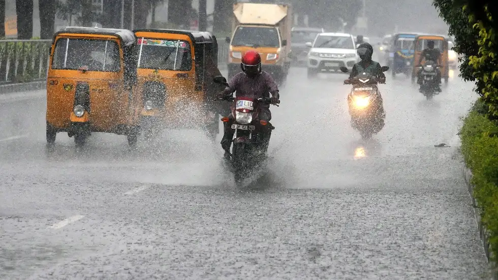
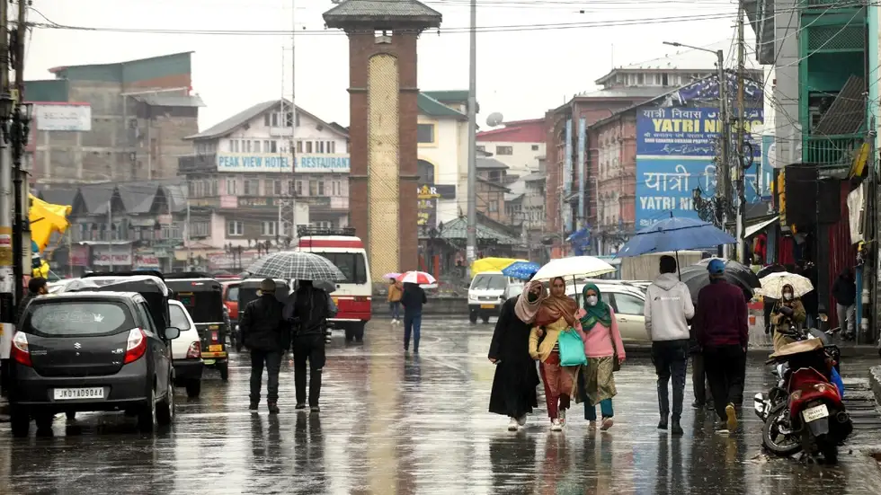
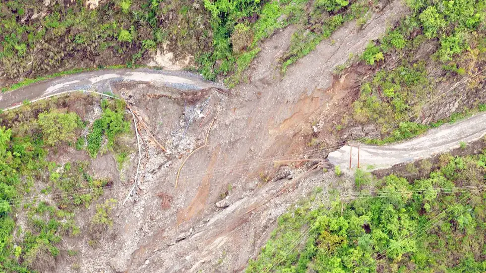

Fresh Spell of Heavy Rains,
Thunderstorms Forecast Over Tamil Nadu, Kerala This Weekend:
Since the beginning of 2022, mostly dry weather has prevailed over parts of the southern
peninsula, with some episodes of light intensity showers. Kerala has recorded a mere 4 mm,
while Tamil Nadu has managed to record an excess amount of precipitation at 35 mm between
January 1 to February 10.
Now, rains are set to revive over some parts of South India, following a brief break. As per
The Weather Channel’s met team, strong northeasterly winds will bring rain with
thunderstorms across the eastern coast of Tamil Nadu and southern Kerala through the
weekend.
World Leaders Meet at One Ocean
Summit, Make Commitments to Protect World's Oceans: French
President Emmanuel Macron held a high-level summit to protect the world's oceans, which was
attended by representatives of more than 100 countries.
The One Ocean Summit in Brest brought together heads of state and government, leaders of
multilateral institutions, shipping companies and civil society policymakers to unite in
supporting the "Brest Commitments for the Oceans", reports Xinhua news agency.
During the summit, panels were held on various commitments to marine protection and tackling
climate change.
Macron confirmed the summit's goal of "making commitments to bring forward useful actions
and an essential international agenda for 2022".
Feeble Western Disturbance to Bring
More Rains Over Jammu, Kashmir, Ladakh, Himachal on February 13-14: February has brought along with it ample rains across the Northern half of
India, thanks to a seemingly never-ending stream of western disturbances (WD).
On average, 4-6 WDs approach the Western Himalayan Region every month during the winter
season. This season, however, has remained highly active in terms of such systems, with an
estimated 25+ WDs post-monsoon since October 2021.
Now, another fresh spell of rain is set to lash parts of North India, starting this Sunday,
February 13. A feeble western disturbance triggers these wet conditions, but its impact
would be short-lived, i.e., just 48 hours (February 13- 14).
Gulmarg Gets “World’s Largest”
Igloo Cafe, Becomes This Year’s Trending Tourist Attraction: The
world's largest igloo cafe, located in Gulmarg, Kashmir, has finally opened its doors for
visitors until mid-March—the end of winter. Part of Gulmarg's renowned ski resorts, the cafe
is the group’s second attempt in India, much bigger than the one built last year.
The cafe's management—Kolahoi group—said that the concept of a snow cafe is incredibly
popular in Switzerland, Finland and Canada. Several of them even have facilities to stay.
“I thought Gulmarg sees a lot of snow, so why not start this concept here," Syed Wasim Shah,
creator of the igloo, quoted as saying.
Uttarakhand: 23 Die as 500 mm
Rainfall Floods Nainital, Chamoli, Udham Singh Nagar, Champawat, Uttarkashi
Districts: Following dozens of deaths in Kerala due to monsoon
rains over the weekend, a series of rain-related incidents have claimed at least 23 lives so
far in Uttarakhand, as per the official sources on Tuesday. As per the State Emergency
Operation Centre (SEOC), several people were killed in Nainital last night, while hundreds
remain stranded across multiple districts of the hilly region.
Record rainfall across Uttarakhand
Over the last 24 hours till Tuesday morning, multiple monitoring stations in Nainital,
Almora, Bageshwar, Chamoli, Pauri Garhwal, Pithoragarh, Udham Singh Nagar, Champawat, and
Uttarkashi districts have registered extremely heavy rainfall of over 200 mm. A maximum of a
whopping 600+ mm rain has been recorded at Badrinath in Chamoli and Gangotri in
Uttarkashi.